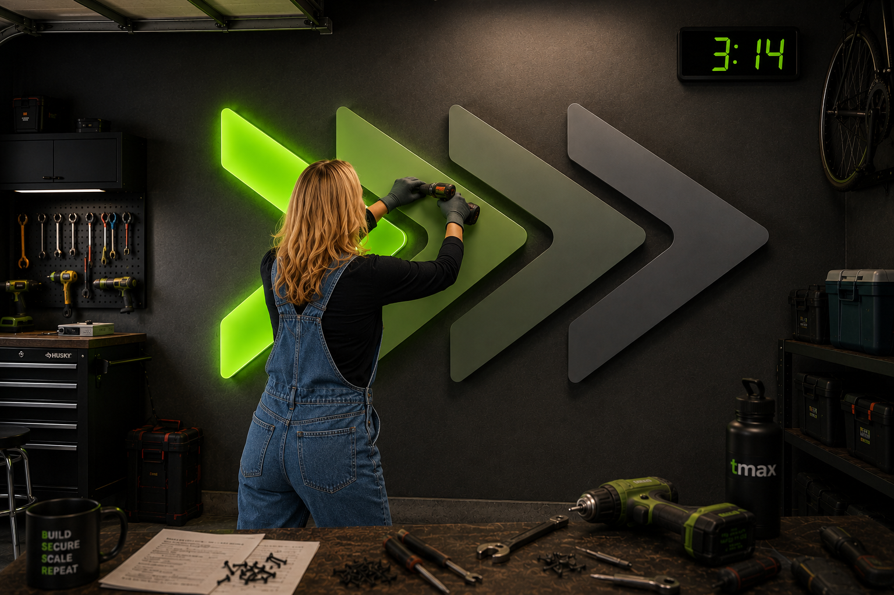
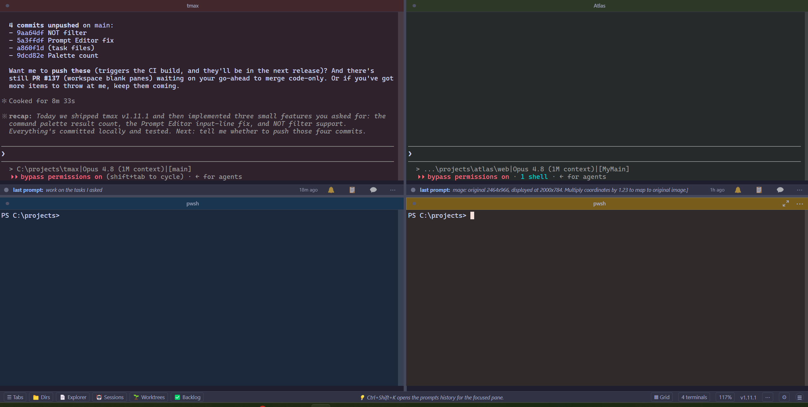
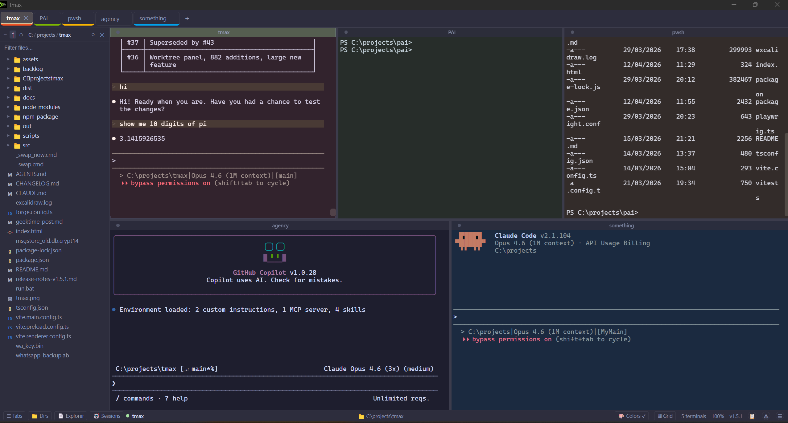
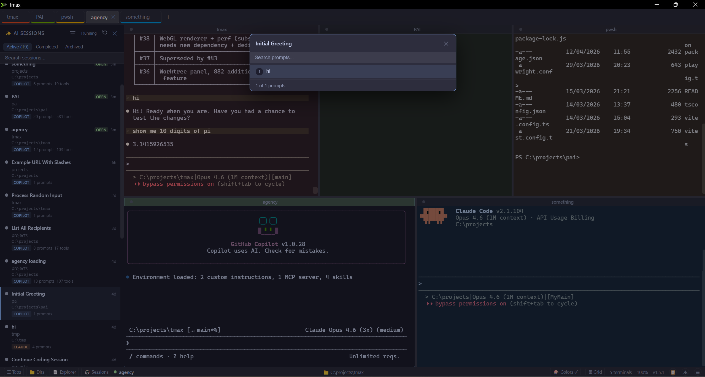
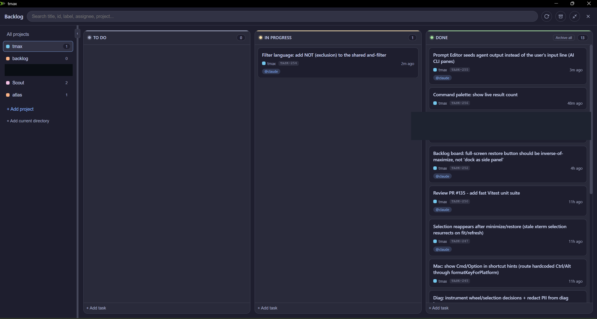
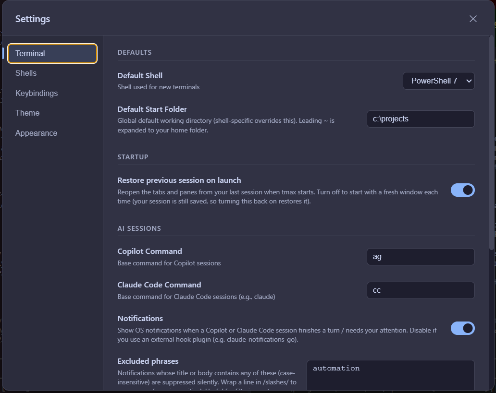
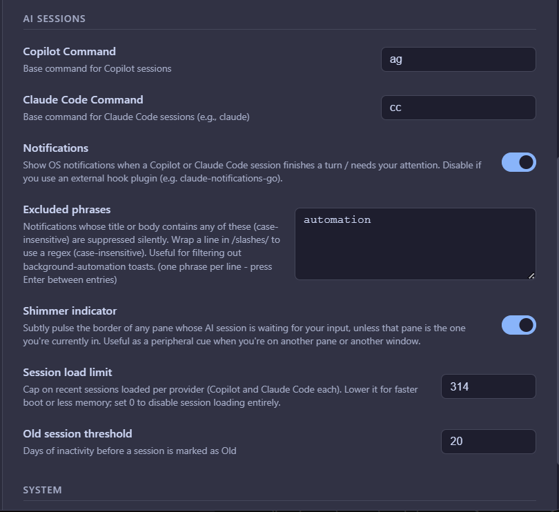
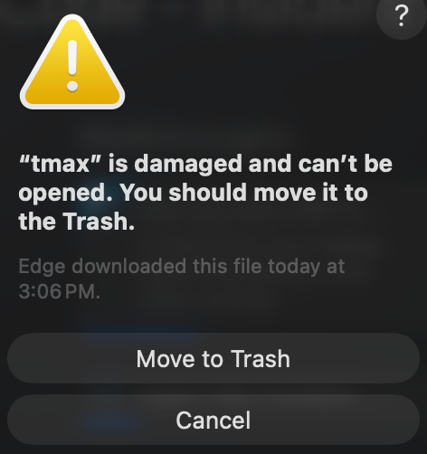

> tmax
Get the max out of your terminal.

3.2KInstalls
44Releases
1,396Commits
28Contributors
4 moSince v1.0
> whoami
whoami
name: Inbar Rotem
role: Group Manager @ Microsoft ILDC
team: Agentic Security
passion: Building tools that don't exist yet
side_quests: [tmax, Scout, Atlas, Quest, video dub]
> cat /problem DEMO
Windows Terminal
GitHub Copilot
GitHub Copilot
GitHub Copilot
GitHub Copilot
Which one is which? 🤷
Running 3-5 AI agents at once and losing track of all of them. Existing terminals have zero concept of what an "AI session" is.

> tmax --layout DEMO

⬜
Tiling splits
CtrlAltArrow🎈
Floating panels
CtrlShiftU🔲
Grid mode
CtrlShiftF🎯
Pane hints
CtrlShiftJ> tmax --explore DEMO

📂
File tree sidebar
CtrlShiftX📄
Click .md = rendered preview
Mermaid diagrams too🖼️
Click image = viewer
.png .jpg .gif📊
Built-in diff review
inline annotations> tmax --sessions DEMO

✨
AI Sessions panel
CtrlShiftC🔃
Resume any session
click to resume⏹️
Shimmer alerts
agent needs input🔔
Native notifications
agent finished> tmax --transcript DEMO
AI Session Transcript
[14:23] You: Fix the auth middleware
[14:23] Agent: I'll update src/middleware/auth.ts...
[14:25] Agent: Done. 3 files changed, tests passing.
[14:25] You: Now add rate limiting
[14:26] Agent: Adding express-rate-limit...
💬
Full transcript
CtrlAltT🔍
Search all prompts
CtrlShiftY📝
Prompt editor
CtrlAltE🧹
Bulk cleanup
archive old sessionsCLI coding agents don't show timestamps on messages. tmax adds them, so you know exactly when each prompt and response happened.
> backlog board DEMO

✅
Multi-project kanban
CtrlAltB🤖
Attach AI sessions to tasks
live output streamI manage tmax development from inside tmax itself. The backlog board ships with a CLI so AI agents can file and close tasks autonomously.
> tmax --settings DEMO
Ctrl+,

🎨
12 theme presets
Catppuccin, Tokyo Night, Nord...💎
Mica / Acrylic effects
Windows native blur⚙️
Settings UI
no JSON editing needed🌏
Shell profiles
PowerShell, WSL, Git Bash, CMD🔧
Keybinding editor
full customization💾
Workspace persistence
restore layout on launch> tmax --notifications DEMO

🔔
Native OS notifications
agent done / needs input✨
Shimmer effect on pane
visual "look at me"🔇
Excluded phrases filter
suppress noisy notifications📰
Notification center
history of all alertsThe whole point is knowing when your agents need you. You shouldn't have to babysit a terminal window.
> tmax --shortcuts DEMO
⌨️
Global hotkey
CtrlShiftSpace⚡
Command palette
CtrlShiftP🔁
Undo close (10-deep)
CtrlShiftT📋
Tab groups
drag, color, collapse🔌
Pane zoom
CtrlShiftZ🔗
Quick jump to pane
CtrlShiftJ🛠️
Custom keybindings
rebind anything
shortcuts cheatsheet
Ctrl+Alt+Arrow split pane (direction)
Ctrl+Shift+W close pane
Ctrl+Shift+N new tab
Ctrl+Tab cycle tabs
> tmax --sign
Windows
✅
Azure Trusted Signing
SmartScreen trustedmacOS

Not signed yet
xattr -cr /Applications/tmax.app
signing
provider: Azure Trusted Signing
cost: $9.99/mo # no hardware token needed
setup: Scout researched docs + wrote the CI YAML
result: No more "Unknown Publisher" on Windows
macos: Apple Developer $99/yr — not gonna happen
> tmax --help
🪟Windows (signed)
🍎macOS (ARM + Intel)
🐧Linux (deb/rpm)
~
code_signed: Azure Trusted Signing
license: MIT
repo: github.com/InbarR/tmax
teams: PAI > tmax channel
# Questions?